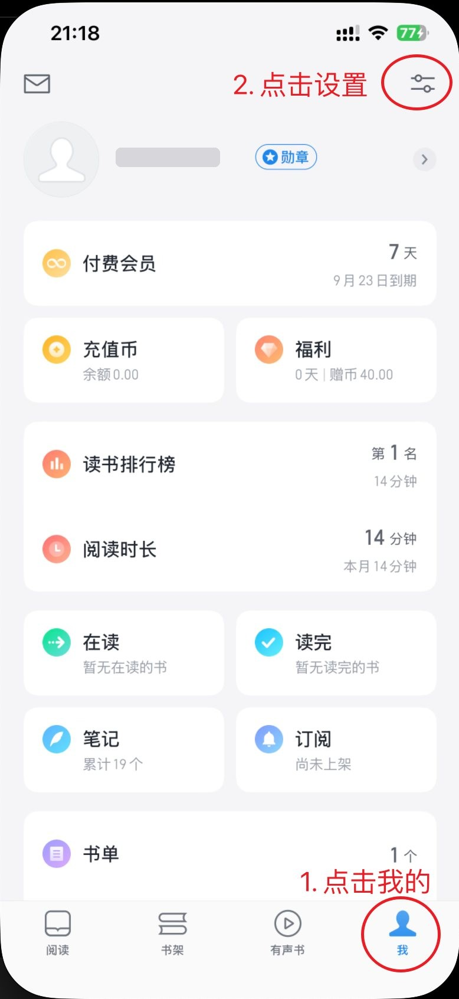
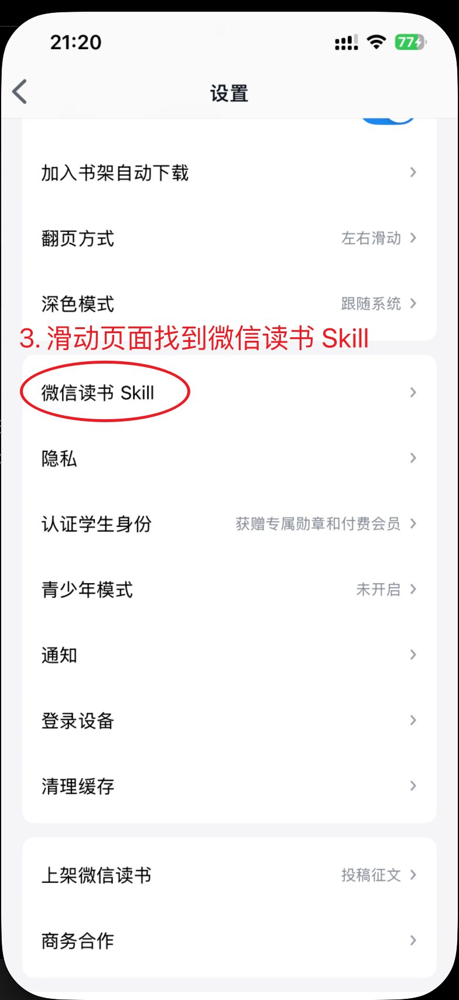
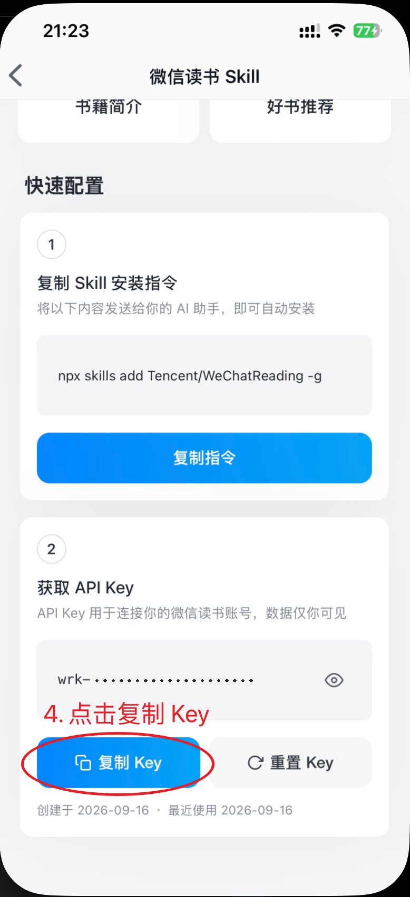
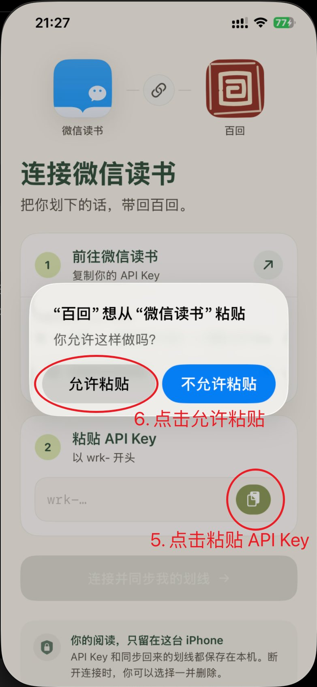
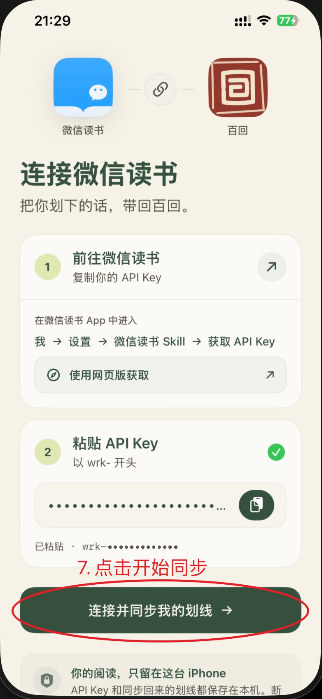

如何连接微信读书
从微信读书复制一串 API Key，粘贴回百回。大约一分钟。
-
在微信读书
点「我」，再点右上角设置
点底部最右侧的 我，再点右上角的 设置 图标。

-
在微信读书
打开「微信读书 Skill」
在设置里往下滑，点 微信读书 Skill。

-
在微信读书
复制 API Key
滑到「获取 API Key」，点 复制 Key。Key 以
wrk-开头。
-
回到百回
粘贴 API Key
切回百回，点输入框右侧的粘贴按钮；系统询问时点 允许粘贴。

-
在百回
开始同步
看到“已粘贴”后，点 连接并同步我的划线。

截图中的红色序号对应上面的步骤；界面可能与你的微信读书版本略有不同。
还是找不到？
设置里没有「微信读书 Skill」
这是较新的功能。请先到 App Store 把微信读书更新到最新版本，再重新进入「我 → 设置」查看。
用电脑获取
在电脑浏览器打开 weread.qq.com/r/weread-skills，点「登录微信读书」并用微信扫码，页面上会显示你的 API Key。复制后通过微信「文件传输助手」发到手机，再在百回里粘贴。
粘贴后提示连接失败
请确认复制的是完整的一整串、以 wrk- 开头，前后没有多余文字。如果曾经重新生成过 Key，旧的会失效，请复制最新的那一串。
API Key 安全吗？
Key 只保存在你 iPhone 的钥匙串里，百回没有服务器，不会上传它。请不要把 Key 发给任何人，也不要贴在公开的地方。